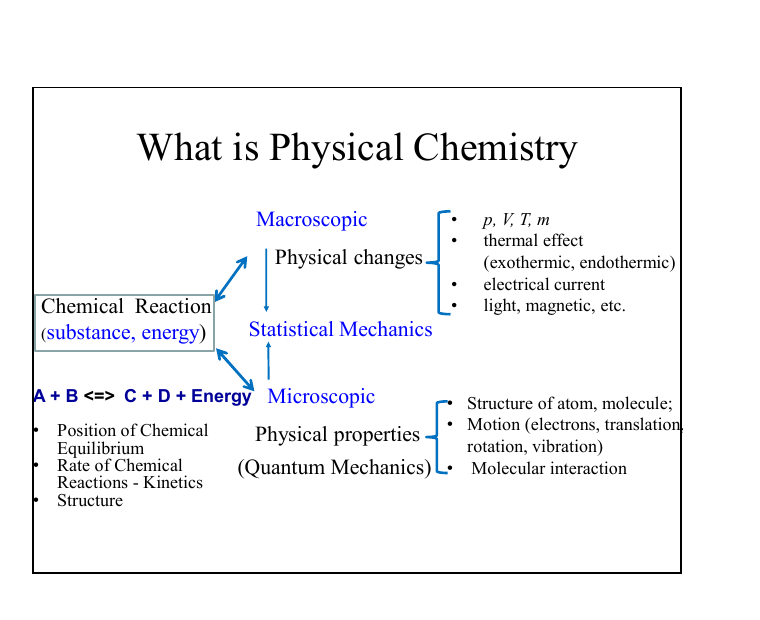
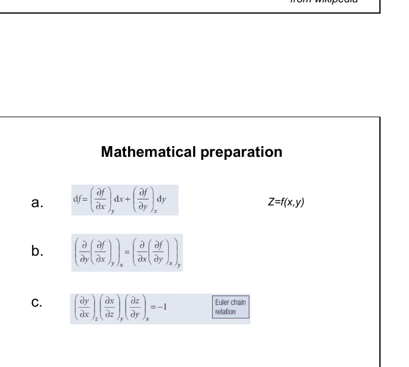
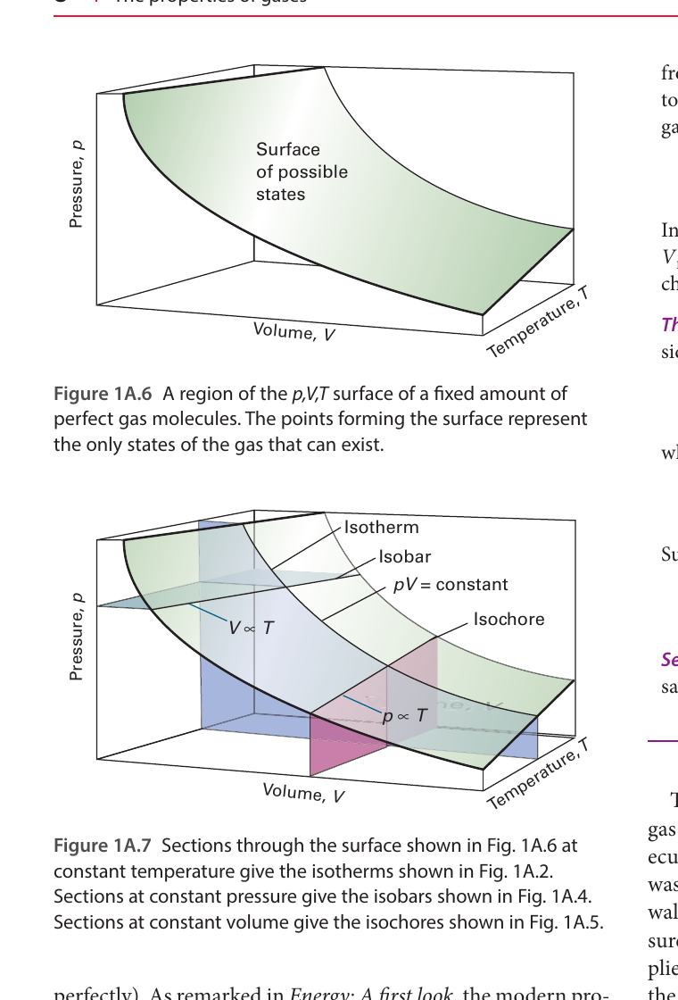

研究状态性质、平衡和过程方向，不直接回答过程有多快。
LECTURE 01 · 2026/09/08
绪论、数学基础与理想气体
Introduction, mathematical preparation, and perfect gases
课堂笔记授课课件Atkins 教材
1. 物理化学研究什么？
物理化学用物理原理和数学模型解释并预测化学体系的性质与行为。它连接宏观可测量量（p、V、T、组成和热效应）与微观结构和运动（电子、平动、转动、振动、分子间作用及反应机理）。
速记纠正
“平衡位置”主要由热力学和化学平衡讨论；化学动力学研究达到平衡的速率与路径。“结构”也不是简单的静止状态，而由量子力学、统计力学与光谱学共同连接到实验。

2. 历史脉络
“Physical Chemistry”一词通常追溯到 Lomonosov 在 1752 年的使用。1887 年 Ostwald 创办《Zeitschrift für Physikalische Chemie》，标志着学科制度化。van ’t Hoff、Gibbs、Arrhenius 与 Ostwald 奠定了化学热力学、平衡、电解质和动力学基础。Gibbs 1876 年关于非均相平衡的论文引入 Gibbs 能、化学势和相律等核心概念；此后统计力学、量子力学、表面化学及超快光谱把研究推进到分子尺度。
3. 多元函数与全微分
热力学状态函数通常同时依赖多个变量。这里 x、y 表示独立变量，z 表示状态函数。若 z = f(x,y)，其全微分为：
dz = (∂z/∂x)y dx + (∂z/∂y)x dy
下标表示求偏导时保持不变的变量。若 F = F[x,z(x,y)]，固定 y 时：
(∂F/∂x)y = (∂F/∂x)z + (∂F/∂z)x(∂z/∂x)y
常用欧拉循环关系为：
(∂y/∂x)z(∂x/∂z)y(∂z/∂y)x = −1

4. 气体状态与理想气体模型
气体平衡状态用压力 p、体积 V、热力学温度 T 和物质的量 n 描述；R 是气体常数。压力 SI 单位为 Pa；气体方程中的温度必须使用 K；体积单位必须与 R 的单位配套。
pV = nRT
理想气体是忽略分子自身体积和分子间作用的模型。真实气体在低压极限 p → 0 时趋近理想行为。

5. 经验气体定律
pV = constant
n、T 恒定；p–V 等温线为双曲线。
V/T = constant
n、p 恒定；V 对 T 为直线。
p/T = constant
n、V 恒定；严格命名常称 Gay-Lussac 或 Amontons 定律。
V/n = constant
p、T 恒定。
这些关系统一于组合气体定律：
p₁V₁/(n₁T₁) = p₂V₂/(n₂T₂)
6. 分压与摩尔分数
组分 J 的分压定义为：在相同温度和总体积下，该组分单独存在时产生的压力。对理想气体混合物：
pJ = xJp xJ = nJ/ntotal
Dalton 分压定律给出 p = ΣpJ。因此“mole fraction = partial pressure / total pressure”应附带理想气体混合物这一条件，它不是摩尔分数的一般定义。